Japan / Hiroshima / Osakikamijima
Osakikamijima, Hiroshima: things to do, food and stays
Osakikamijima · Hiroshima
Osakikamijima
Highlighted on the Hiroshima map.
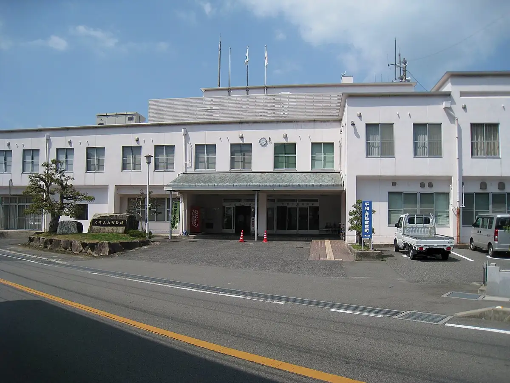
Stay
きのえ温泉 ホテル清風館
Kinoe Onsen Hotel Seifu Kan
Hotel at Kinoe Onsen in Okiura, Osakikamijima with scenic views.
GLAMPING SKYMARINE
GLAMPING SKYMARINE
Dining
徳森食堂
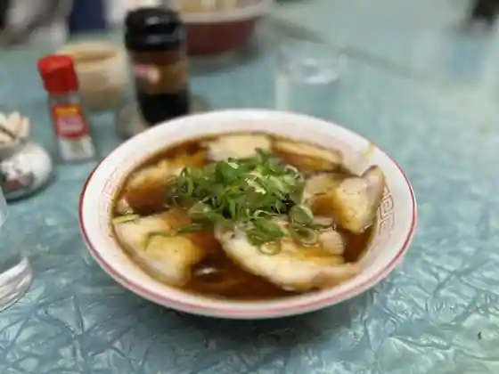
Toku Mori Shokudo
海舟櫓
Kaishu Yagura
長屋門カフェ
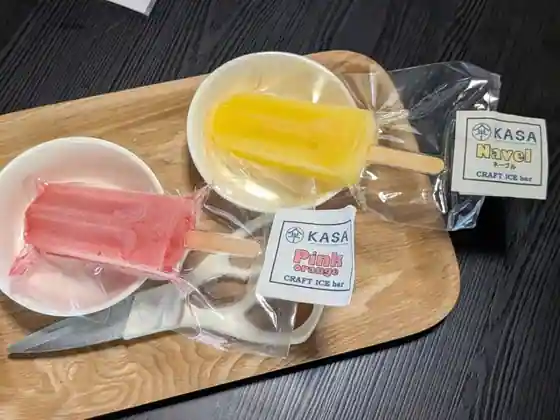
Nagaya Mon Cafe
島の宿むらかみ
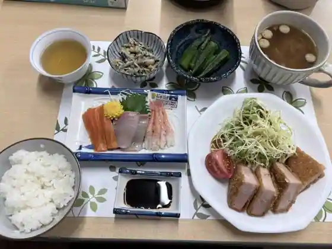
Shima No Yado Murakami
星と陽
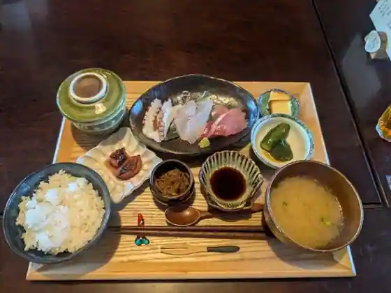
Hoshi To Yo
一正堂製菓
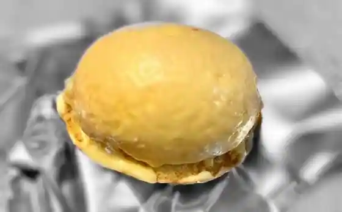
Kazumasa Do Seika
北豊ラーメン
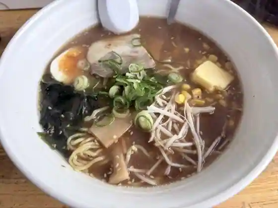
Kita Yutaka Ramen
たけもとカレー
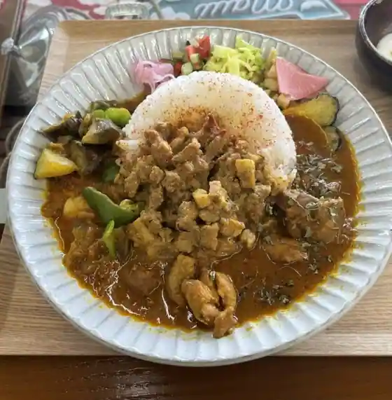
Takemoto Kare
久万田
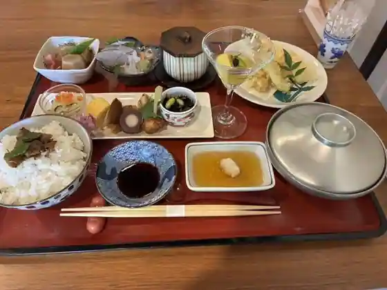
Kuma Ta
麺や梵
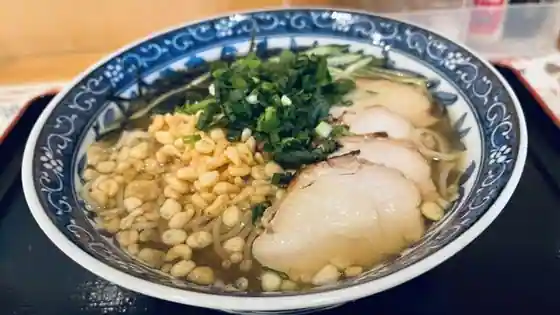
Men Ya Bon
BAR SAPPHIRE
BAR SAPPHIRE
いづみ旅館
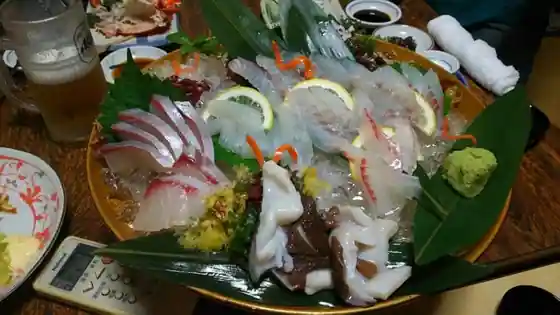
Izumi Ryokan
AQUA ROOM SKY MARINE
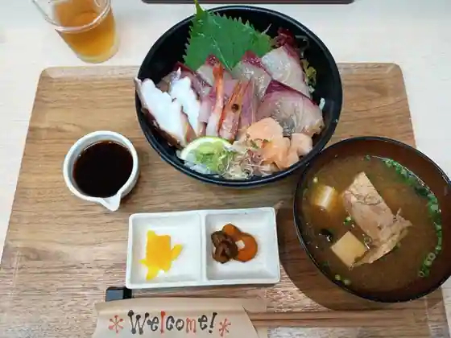
AQUA ROOM SKY MARINE
千代
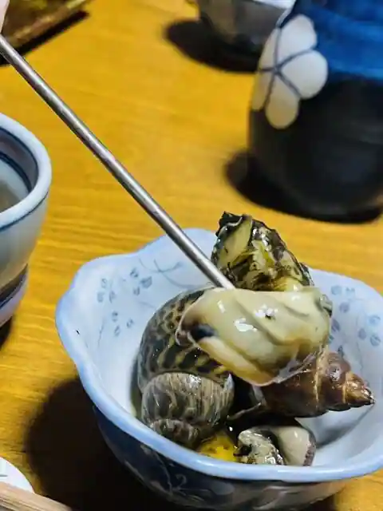
Chiyo
風待ちレストラン
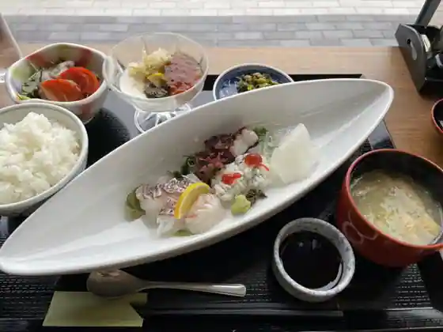
Kazamachi Chi Restaurant
岩崎農園カフェ
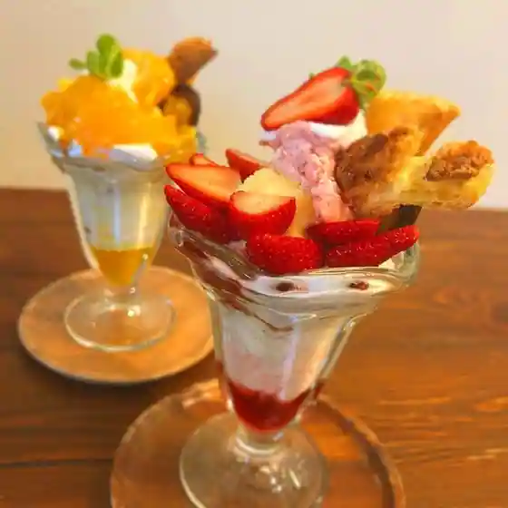
Iwasaki Noen Cafe
ミカタカフェ
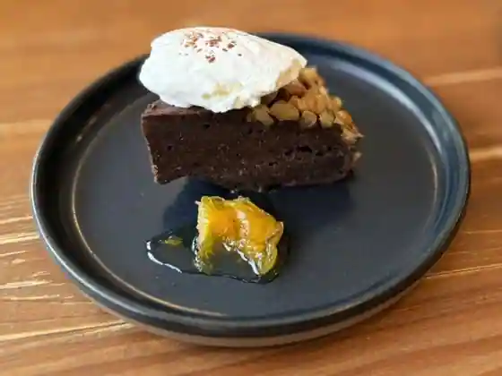
Mikata Cafe
Soft Dream
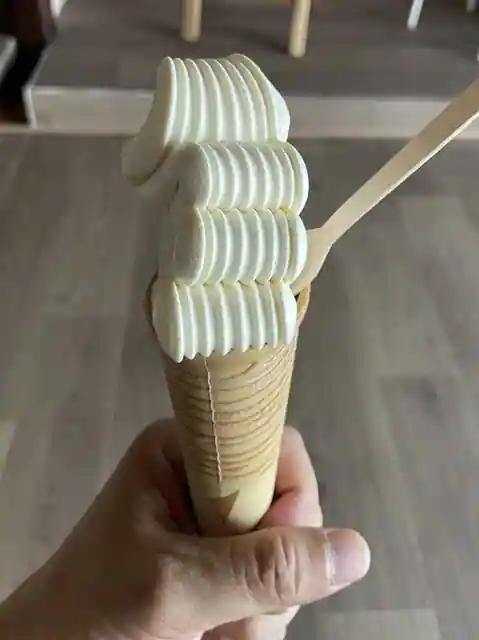
Soft Dream
HOGALAKA
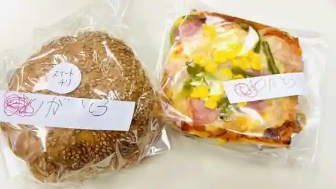
HOGALAKA
珈琲 陶
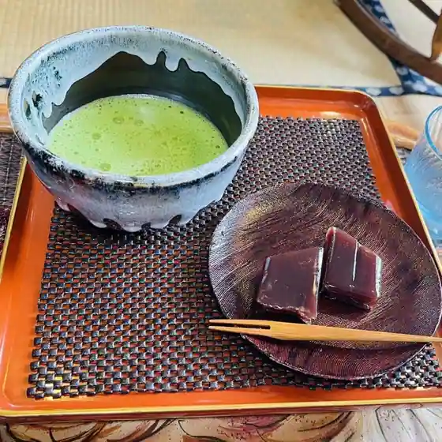
Coffee To
Sights
Kami Mineyama
Umi to Shima no History Museum Taibo Gatsu Tei
Kinoe Fureai Local History Museum
Nagashima Bridge
Kinoe Itsukushima Shrine
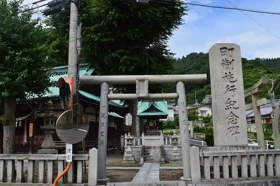